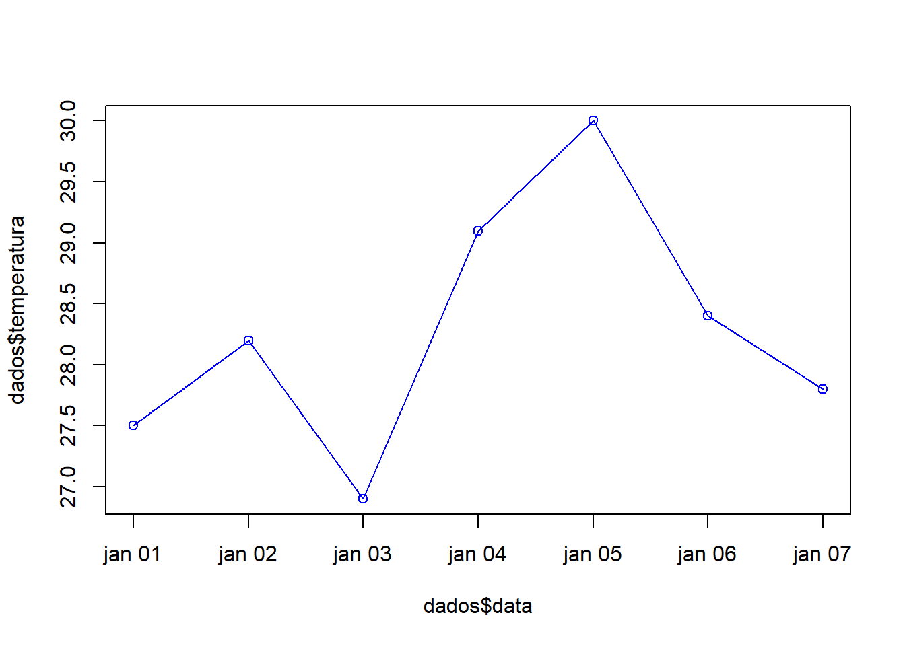

#Criando o vetor
temperaturas <- c(25.2, 26.1, 27.0, 26.8)
#Visualizando
temperaturas[1] 25.2 26.1 27.0 26.8# Verificando a classe do objeto criado
class(temperaturas)[1] "numeric"# Acessando elementos específicos
temperaturas[2][1] 26.1Os tipos mais comuns de tipos de objeto são: vetores (vector), data frames (tabelas), listas (list), matrizes (matrix), e array (conjunto de matrizes).

Vertor: é um arranjo linear de dados
#Criando o vetor
temperaturas <- c(25.2, 26.1, 27.0, 26.8)
#Visualizando
temperaturas[1] 25.2 26.1 27.0 26.8# Verificando a classe do objeto criado
class(temperaturas)[1] "numeric"# Acessando elementos específicos
temperaturas[2][1] 26.1#Criando o vetor
sensacoes <- c("Frio", "Agradável", "Quente", "Muito Quente", "Extremo")
#Visualizando
sensacoes[1] "Frio" "Agradável" "Quente" "Muito Quente" "Extremo" # Verificando a classe do objeto criado
class(sensacoes)[1] "character"# Acessando elementos específicos
sensacoes[1][1] "Frio"sensacoes[3][1] "Quente"Funções base que já existem dentro do programa RCRAN.
| Função | O que faz |
|---|---|
| sum() | Soma todos os valores |
| min() | Retorna o menor valor |
| max() | Retorna o maior valor |
| mean() | Calcula a média dos valores |
| round() | Arredonda um número para n casas decimais |
| length() | Informa quantos valores há no vetor |
| sd() | Calcula o desvio padrão de uma amostra |
Todas essas funções fazem parte do que chamamos de “base R”. Não precisam de pacotes extras para funcionar.
x <- 4
y <- 6
sum(x,y)[1] 10# Vetor com temperaturas diárias (em °C)
temperaturas <- c(27.2, 28.5, 29.0, 26.8, 30.1)
# Média das temperaturas
mean(temperaturas)[1] 28.32# Temperatura máxima
max(temperaturas)[1] 30.1# Temperatura mínima
min(temperaturas)[1] 26.8# Soma total
sum(temperaturas)[1] 141.6# Número de observações
length(temperaturas)[1] 5[1] 28.3Crie um vetor chamado chuvas com os valores de precipitação (em mm) de 7 dias consecutivos.
Depois:
Calcule a soma total de chuvas
Encontre o maior valor de precipitação
Arredonde a média com 2 casas decimais
Data frames: é uma das estruturas mais importantes para análise de dados.
## Exemplo 01
dados <- data.frame(
dia = 1:4,
temperatura = c(25.2, 26.1, 27.0, 26.8)
)## Exemplo 02
# Criando um data frame
dados <- data.frame(
data = as.Date('2023-01-01') + 0:6,
temperatura = c(27.5, 28.2, 26.9, 29.1, 30.0, 28.4, 27.8)
)
print(dados) data temperatura
1 2023-01-01 27.5
2 2023-01-02 28.2
3 2023-01-03 26.9
4 2023-01-04 29.1
5 2023-01-05 30.0
6 2023-01-06 28.4
7 2023-01-07 27.8plot(dados$data, dados$temperatura, type = "o", col = "blue")
## Exemplo 03
# Criando um data frame
dados <- data.frame(
data = as.Date("2025-03-24") + 0:4,
temperatura_min = c(22.1, 21.8, 22.4, 23.0, 21.5),
temperatura_max = c(30.2, 29.8, 31.0, 30.5, 29.7),
precipitacao = c(0.0, 5.2, 1.0, 0.0, 3.1)
)
# Visualizando os dados
print(dados) data temperatura_min temperatura_max precipitacao
1 2025-03-24 22.1 30.2 0.0
2 2025-03-25 21.8 29.8 5.2
3 2025-03-26 22.4 31.0 1.0
4 2025-03-27 23.0 30.5 0.0
5 2025-03-28 21.5 29.7 3.1# Média de temperatura máxima
mean(dados$temperatura_max)[1] 30.24# Filtrando os dias com chuva (precipitação > 0)
dados_com_chuva <- dados[dados$precipitacao > 0, ]Crie um data.frame chamado observacoes com 7 dias de dados contendo:
Data
Umidade relativa (%)
Velocidade do vento (km/h)
Depois:
Calcule a média da umidade
Filtre os dias com vento acima de 15 km/h
Usar head(dados) para ver as primeiras linhas
Usar str(dados) para ver o tipo de cada coluna
Usar summary(dados) para obter estatísticas básicas
Lista: tipo de objeto que pode conter elementos de diferentes tipos: vetor de caracteres, números, matrizes
# Criando uma lista com informações da estação meteorológica
estacao <- list(
nome = "Estação Chapada das Mesas",
codigo = "MA123",
localizacao = c(latitude = -7.3, longitude = -46.0),
temperaturas = c(28.5, 29.1, 27.8, 30.2), # em °C
precipitacoes = c(2.4, 0.0, 1.1, 5.6), # em mm
status = TRUE
)
# Acessando elementos da lista
estacao$nome[1] "Estação Chapada das Mesas"estacao$localizacao["latitude"]latitude
-7.3 mean(estacao$temperaturas)[1] 28.9# Atualizando o status
estacao$status <- FALSECrie uma lista chamada cidade com os seguintes elementos: - Nome da cidade - População estimada - Vetor com as temperaturas médias dos últimos 7 dias - Valor lógico indicando se há estação meteorológica local
Depois, calcule a média das temperaturas dessa cidade!
Uma matriz é uma estrutura bidimensional (2D) composta por linhas e colunas, onde todos os elementos devem ser do mesmo tipo de dado (geralmente numérico).
# Criando uma matriz com temperaturas (3 dias, 4 horários)
mt_temperatura <- matrix(
c(22.1, 24.3, 25.5, 23.0, # Dia 1
21.8, 23.5, 26.2, 24.1, # Dia 2
20.0, 22.4, 24.0, 23.3), # Dia 3
nrow = 3,
ncol = 4,
byrow = TRUE
)
mt_temperatura [,1] [,2] [,3] [,4]
[1,] 22.1 24.3 25.5 23.0
[2,] 21.8 23.5 26.2 24.1
[3,] 20.0 22.4 24.0 23.3length(mt_temperatura)[1] 12dim(mt_temperatura)[1] 3 4# Nomeando linhas e colunas
rownames(mt_temperatura) <- c("Dia 1", "Dia 2", "Dia 3")
colnames(mt_temperatura) <- c("06h", "12h", "15h", "18h")
# Visualizar a matriz
mt_temperatura 06h 12h 15h 18h
Dia 1 22.1 24.3 25.5 23.0
Dia 2 21.8 23.5 26.2 24.1
Dia 3 20.0 22.4 24.0 23.3#Acessando elementos da
# Temperatura do Dia 2 às 15h
mt_temperatura["Dia 2", "15h"][1] 26.2# Todas as temperaturas do Dia 3
mt_temperatura["Dia 3", ] 06h 12h 15h 18h
20.0 22.4 24.0 23.3 # Todas as temperaturas às 12h
mt_temperatura[, "12h"]Dia 1 Dia 2 Dia 3
24.3 23.5 22.4 ## Realizando operações com matriz
# Média por horário
colMeans(mt_temperatura) 06h 12h 15h 18h
21.30000 23.40000 25.23333 23.46667 # Média por dia
rowMeans(mt_temperatura) Dia 1 Dia 2 Dia 3
23.725 23.900 22.425 # Temperatura máxima por dia
apply(mt_temperatura, 1, max)Dia 1 Dia 2 Dia 3
25.5 26.2 24.0 Crie uma matriz com valores de umidade relativa para 5 dias e 3 horários (manhã, tarde e noite).
Em seguida, calcule:
A umidade média por horário
O valor máximo por dia
Qual o menor valor registrado na semana
Estruturas de controle são blocos de código que controlam o fluxo de execução de um programa. Ou seja, elas determinam quais comandos serão executados, em que ordem e quantas vezes.
Elas são fundamentais porque permitem que o código:
Tome decisões (por exemplo: “Se estiver quente, mostre um aviso de calor”);
Repita ações (por exemplo: “Para cada dia da semana, calcule a média de temperatura”);
Reaja a diferentes situações
| Tipo | Usado para… |
|---|---|
| if, else | tomar decisões |
| for | repetir uma ação para vários valores |
| while | repetir enquanto uma condição for válida |
#Exemplo com if
x <- 25
if (x > 20) {
print("Está quente")
}[1] "Está quente"#Exemplo com if e else
temperatura <- 30
if (temperatura > 28) {
print("Está quente!")
} else {
print("Temperatura agradável.")
}[1] "Está quente!"#Exemplo com for
dias <- c("Seg", "Ter", "Qua")
for (dia in dias) {
print(paste("Processando:", dia))
}[1] "Processando: Seg"
[1] "Processando: Ter"
[1] "Processando: Qua"#Exemplo com while
x <- 1
while (x <= 3) {
print(x)
x <- x + 1
}[1] 1
[1] 2
[1] 3Além das Funções base já existem dentro do programa RCRAN, nós podemos criar nossas próprias funções para organizar e automatizar processos de análise de dados.
As funções são criadas com function().
Podemos passar quantos argumentos quiser.
Pode usar return() ou deixar o último valor ser retornado automaticamente.
sapply() é útil para aplicar uma função a vetores/listas.
# Função para calcular a amplitude térmica do dia
amplitude_termica <- function(temp_max, temp_min) {
return(temp_max - temp_min)
}
# Usando a função
amplitude_termica(32.5, 21.8) # resultado: 10.7[1] 10.7# Função que classifica temperaturas como "Frio", "Agradável" ou "Quente"
classificar_temp <- function(temp) {
if (temp < 20) {
return("Frio")
} else if (temp <= 27) {
return("Agradável")
} else {
return("Quente")
}
}
# Aplicando a função a um vetor
sapply(temperaturas, classificar_temp)[1] "Quente" "Quente" "Quente" "Agradável" "Quente" Crie uma função chamada avaliar_precipitacao() que receba um valor de chuva (em mm) e retorne:
“Sem chuva” se for 0
“Chuva leve” se for entre 0 e 5 mm
“Chuva forte” se for acima de 5 mm
Depois, aplique essa função a um vetor de precipitação com 7 dias.